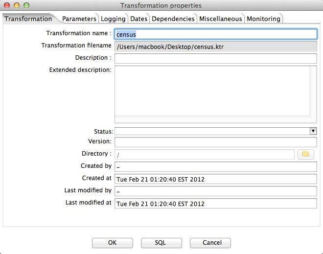

Save Wrapper
Go to the
File
menu, select
Save as
, and specify the name of your own wrapper.
A window appears where you can specify Transformation properties.
You only need to specify
Transformation Name
.
Click
Save
.
